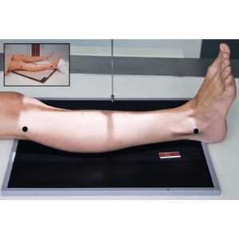
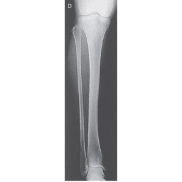
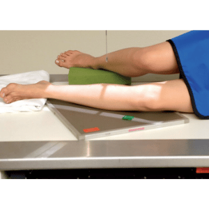
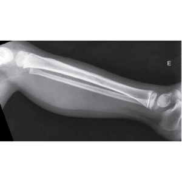
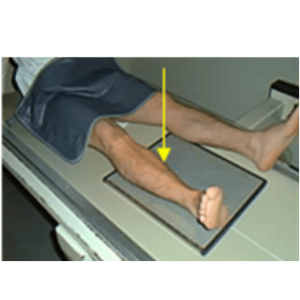
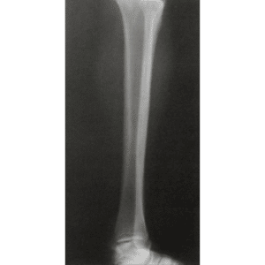

PERNA - AP
Paciente
Sentado ou em D.D., perna em extensão, pé em dorsiflexão de 90º e discreta rotação interna, centralizada sobre o chassi.
Chassis / Filme
30X40 / 35X43 – na longitudinal
Raio central
⊥ orientado para a diáfise da perna.
DFF
1,00 m – com ou sem bucky.


PERNA - PERFIL
Paciente
Sentado ou em D.L., perna em extensão/ semi-flexão, tornozelo em dorsiflexão, perna centralizada em perfil sobre o chassi.
Chassis / Filme
30X40 / 35X43 – na longitudinal.
Raio central
⊥ orientado para a diáfise da perna.
DFF
1,00 m – com ou sem bucky.


Observação: Poderá ser realizada incidência em ortostático.
PERNA - OBLÍQUA
Paciente
Sentado ou em D.D., perna em extensão, obliquidade interna e externa a 45º, tornozelo a 90º centralizada sobre o chassi.
Chassis / Filme
30X40 / 35X43 – na longitudinal
Raio central
⊥ orientado para a diáfise da perna.
DFF
1,00 m – com ou sem bucky.


Observação: Poderá ser utilizado filme panorâmico na diagonal.